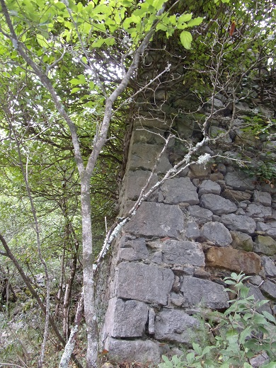
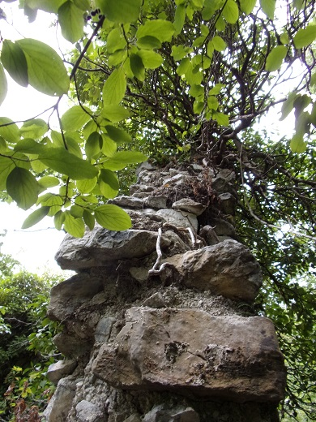
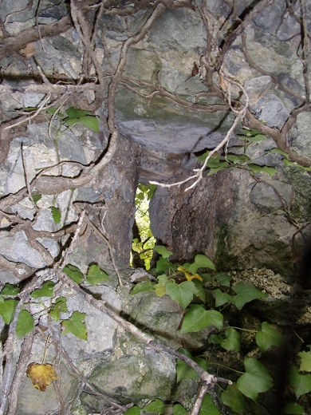
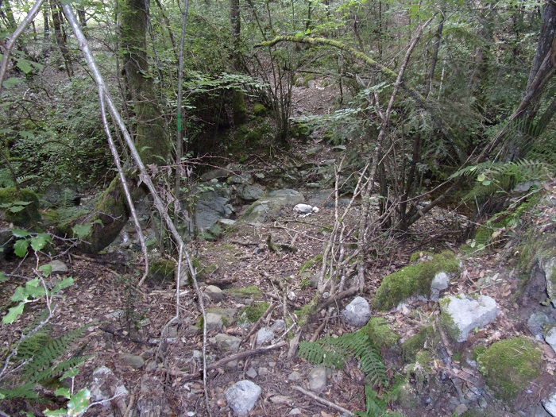
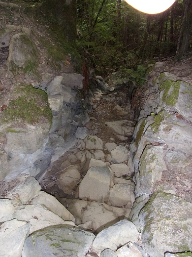
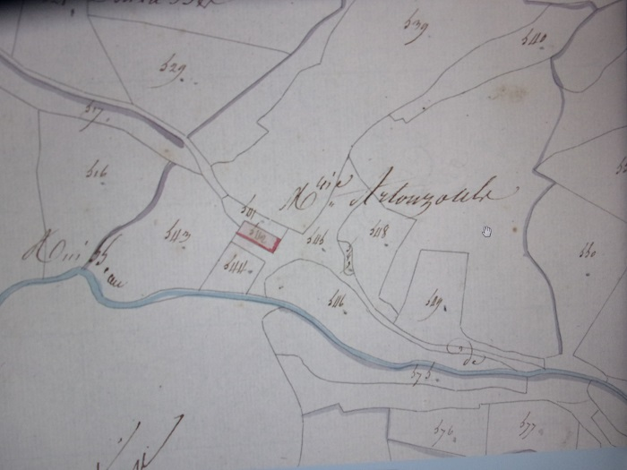

Le camp grand est une grande étendue herbeuse à flan de montagne quasiment aussi pentue que celle au dessus de St Martin.

Vue aérienne des années 1950,
En haut gauche, on aperçoit St Martin, en transversale de la photo le Cap de fer, en dessous du Cap de fer, le grand champ partiellement cultivé est le "camp grant" d'Artozoul.
Cette grande friche a du avoir longtemps le même usage que celle au dessus de St Martin, vigne et pâturage pour mouton, pas suffisamment fertile et trop en pente pour y faire pousser autre chose, mais gardant la trace de l'exploitation humaine (reste de murets et non repousse des chênes verts qui occupent encore le haut de l'espace au dessus du chemin de La Pradelle. Compris entre le ruisseau de La Borde et ce chemin à mi hauteur de montagne, exposée entièrement au plein sud, ce coteau était entretenu par les habitants d'un petit hameau se trouvant en bordure du filet d'eau qui coule en hiver. L'espace du hameau apparaît sur des cartes anciennes avec le nom d'Artozoul ou Artauzoul.

La première fois que ma mère m'y a conduit, qu'elle était fière de me montrer ce haut mur de pierre, avec ce trou, petit, qui pour elle ne pouvait être qu'une meurtrière. Ce devait être un château pour avoir des murs aussi hauts, selon elle.
Des recherches postérieures m'ont permis d'identifier ce lieu : il s'agit des restes de l'église St Michel. Et même si quelqu'un a eu l'idée de construire sa bergerie à l'intérieur pour facilement récupérer les matériaux, elle reste le "bâtiment le mieux conservé" des 5 ou 6 restes de bâtisse qui ont dû occuper cet espace.
Vue extérieure des restes de l'église
Le lierre s'est accroché à toute les hauteurs des murs
Voir sur cette photo comment étaient cimentés les murs ce qui a permis une certaine longévité
et permet de retracer le plan d'origine de l'édifice
Le pilier central ?
à environ 6 mètres du mur du fond, à égale distance des 2 cotés se trouve les restes d'une construction carrée de 80 cm de coté
(entourée aujourd'hui d'une murette de pierres empilées ayant servie à déliter un bergerie)
Est un pilier central ? ou le socle permettant de supporter l'Autel ?
Les murs restants de St Michel d'Artosoul
D'une taille approximative de 25 mètres de long et 8 mètres de large (forme rectangulaire), pour des murs qui restent aujourd'hui avec plus de 5 mètres de hauteur, cette église devait avoir une taille impressionnante pour le peu de maison qu'on peut trouver aujourd'hui. Est ce pour cette raison que les biographes de Félix Armand en on fait la résidence d'été des moines de l'abbaye de St Martin (voir extrait ci-dessous) ?

La "meurtrière" repérée par ma mère
d'une hauteur d'à peine une 20ène de centimètre est le seul "trou" que comptait ce mur à l'origine (maintenant comme on peut le voir sur une des photos ci-dessus le lierre est parvenu à ce frayer un passage et à ouvrir une deuxième ouverture)
Est ce que cette église avait aussi une vocation défensive comme celle de Marsa ?
Le passage "à gué" du ruisseau et les traces du chemin qui remonte vers le nord sont les repères les plus visibles de cette occupation humaine et de la vie qu'a pu connaître ce petit village dépendant de Saint Martin.
Le passage à gué au travers du ruisseau de la Borde, (difficile sur cette photo d'identifier ce que j'ai dit plus haut, il ne vous reste plus qu'à me croire...)
L'aménagement du ruisseau en amont du passage à gué
Sur une bonne longueur le ruisseau a été canalisé entre 2 murs de pierre qui restent encore aujourd'hui en place
2 Chemins permettent d'atteindre ce village ce qui permet de faire un circuit autour de Saint Martin plus court que celui de la forêt des Fanges et par certains points tout aussi sympathiques (chemin de planèzes - Pas del Taïchou) (ne pas avoir peur de se griffer, ni d'escalader des rochers car le "chemin" est un peu "oublié")

Le circuit pédestre possible dessiné en bleu
"Lorsque la persécution semblait se ralentir, Félix Armand amenait ses paroissiens à une lieue du village au milieu des rochers : ils s'acheminaient ensemble vers la chapelle de Saint-Michel, qui était autrefois le lieu de réunion d'été du monastère. On avait déblayé le sol, et du sein des décombres, s'élevait un autel où le vénérable pasteur célébrait le divin sacrifice.
Il y a deux ans encore, le propriétaire de ce lieu saint déterra en bêchant la terre, une grande quantité d'ossements. Ce lieu avait été sans doute pendant quelque temps le cimetière du couvent, puisque des tombes y furent découvertes ; les squelettes y étaient encore dans un état parfait de conservation en 1828.1
Louis Amiel fait une description à peu près similaire, sauf qu'il situe très mal les lieux, aussi je ne reproduirai pas son texte... Dans la page sur le chemin de Lapradelle, je reprendrai les courriers du père Utéza contenus dans l'ouvrage d'Amiel qui me semblent de circonstance.
Les anciens lieux de cultes2 sur la commune de St Martin avant la destruction du couvent (référence 8, 9 et 12)
pour cette page, c'est la référence 9 qui nous intéresse : Saint-Michel-d'Artosoul
Dans ses "Notes de toponymie audoise, les noms de lieux en ÔZOULS"3 L. ALIBERT donne l'étymologie du nom du village "Artozouls, f., Cne de Saint-Martin-Lys; ancien prieuré sous le vocable de Saint-Michel, uni à l'abbaye de Saint-Martin-Lys" (autres dénominations trouvées : "Attosel, 954 (H. L., V., pr. 96). Artosolum, 955 (Gall. Christ., VI, Just., C. 104). Artosol, 1594 (Arch. de l'Aude, C. rech. diocèse d'Alet). Artozoul, 1781 (C. dioc. Alet). Artauzouls (cad.).")
"...Ces quatre noms présentent la particularité d'être accentués sur l'avant-dernière syllabe malgré leur finale consonnantique. Aucune forme latine, à ma connaissance, ne peut rendre raison de cette accentuation. De plus, les divers radicaux qui ont servi à les constituer ne paraissent pas d'origine latine, sauf, peut-être, le dernier. J'ai tout de suite pensé aux formes proparoxytoniques gauloises dans lesquelles la voyelle de liaison o est tonique, du type ôbriga, ôduros, ôialos, ômagos, ôritos. Or, il existe un composé gaulois qui peut expliquer les noms en ôzouls, c'est Vernosolis, localité mentionnée par l'Itinéraire d'Antonin, dans le pays des Tolosates, que l'on identifie avec le village de Lavernose-Lacasse (Haute-Garonne).
L'excellent manuel de G. Dottin, « La langue gauloise » enregistre :
Soli, terme de nom propre. Voir Suli ?
Suli, thème de nom de divinité assimilée à Minerve; irlandais sûil « œil »; c. f. gallois haul, breton heol « soleil »; Sule-viae est un nom de déesses-mères.
Dauzat ("Les noms de lieux") cite coriosolitis, nom de peuple au pluriel, formé de corio + soli + suffixe t, qui a donné Corseul (Côtes-du-Nord).
Les thèmes arto, ours, pierre; ... figurent aussi dans le glossaire de Dottin.
L'origine gauloise de ces quatre toponymes ne peut sérieusement pas être mise en doute.
( S final des toponymes n'a en général aucune valeur étymologique; il s'est développé, dès le haut Moyen Age, sous des influences analogiques.)"
Ce qui permettrait de dater l'occupation du village à une époque antérieure à l'occupation romaine...
L'abbé Sabarthès dans son "dictionnaire topographique"4 de l'Aude propose une liste d'orthographe pour notre village plus large : "Artozouls, f. , Commune de Saint-Martin-Lys; ancien prieuré sous le vocable de saint Michel, uni à l'abbaye de Saint-Martin-Lys. — Attosol , 954 (H. L., V., pr. 96). — Artosolum, 955 (Gall. Christ., VI, Just., C. 104). — Ecclesia Sancti Michaelis de Artosolo, 1045 (H. L., V, pr. 224). — Artosol , 1594 (Arch. de l'Aude, C. rech. diocèse d'Alet). — Sainct Michel d'Ortosal, 1042-1639) (arch. com. Narb., Invent. Rocq., III, 389). — Au lien d'Artoul, 1076-1639 (ibid., 390). — Ortosol, 1138-1639 (ibid., 393). — Ortozels, 1639 (ibid., I, 683). — Artozoul, 1781 (c. dioc. Alet). — Artauzouls (cad.)."
Il site également un "Artozouls , f. , commune de Saint-Louis-de-Parahou." sans autre précision mais laissant penser qu'il pourrait y avoir une autre référence pour les noms de famille que le village de St Martin.
La recherche sur les noms de famille "ARTAUZOUL", "ARTOZOUL" et "ARTOZOULS" est aussi particulièrement intéressante sur l'origine possible du nom :
Origine du patronyme ARTAUZOUL
Origine : L'origine de ce nom est indo-européenne, l'étymologie de ce nom provient de l'agglutination du nom de personne artusius et du suffixe eolum qui signifie celui qui vit sur la terre d'artusius du gaulois artos l'ours, ce nom précise la localisation de la demeure ancestrale.
Localisation des personnes portant ce nom : Caudiès-de-Fenouillèdes (4), Perpignan (2), Caudiès-de-Conflent (2), Rennes-le-Château (1), Le Bousquet (1) (Pyrénées-Orientales (66) (8), Aude (11) (4) le compte n'est pas juste mais la localisation est remarquable...)
Origine du patronyme ARTOZOUL
Origine : Artozoul est un nom de famille du Languedoc d'origine toponymique, désignant l'originaire d'Artozoul, nom de localité d'origine, ancienne ferme de la région de l'Aude.
Localisation des personnes portant ce nom : Carcassonne (199), Cubières-sur-Cinoble (106), Caudiès-de-Fenouillèdes (87), Bugarach (63), Le Bousquet (61) (Aude (11) (786), Pyrénées-Orientales (66) (221), Paris (75) (20), Hérault (34) (16), Var (83) (5))
Origine du patronyme ARTOZOULS
Origine : L'origine de ce nom est indo-européenne l'étymologie de ce nom provient de l'agglutination du nom de personne artusius et du suffixe eolum qui signifie celui qui vit sur la terre d'artusius du gaulois artos l'ours ce nom précise la localisation de la demeure ancestrale.
Localisation des personnes portant ce nom : Le Soler (113), Bugarach (69), Cubières-sur-Cinoble (25), Saint-Louis-et-Parahou (16), Caudiès-de-Fenouillèdes (16) (Aude (11) (171), Pyrénées-Orientales (66) (162), Hérault (34) (30), Loire (42) (2), Nord (59) (1))
Et encore plus direct : Origine du nom ARTOZOUL : Étymologie - Artozoul : Porté dans l'Aude, désigne celui qui est originaire d'Artozoul, ancien village et prieuré sur la commune de Saint-Martin-Lys. (jolie carte de localisation des personnes concernées)
Une Nouvelle orthographe m'a été proposée par Sun Asahi
Origine du nom ARTHOZOUL Arthozoul est un nom de famille du Languedoc, variante d'artozoul nom de localite d'origine, ancienne ferme de saintmartinlys dans l'aude.
Localisation des personnes portant ce nom : Le Bousquet (510), Escouloubre (281), Narbonne (37), Saint-Louis-et-Parahou (18), Carcassonne (16)
Origine du patronyme ARTHOZOULS
L'origine de ce nom est indoeuropéenne l'étymologie de ce nom provient de l'agglutination du nom de personne artusius et du suffixe eolum qui signifie celui qui vit sur la terre d'artusius du gaulois artos l'ours ce nom précise la localisation de la demeure ancestrale.
Localisation des personnes portant ce nom : Narbonne (9), Roquefort-de-Sault (7), Saint-Julia-de-Bec (4), Sigean (3), Reims (3)
Autre proposition de Renaud Labadie-Savy : Touzé (le "ar" peut signifier "à" en occitan et donc se perdre comme constaté dans plusieurs noms de lieux : en effet l'inventaire Rocques des archives de l'archevêché de Narbonne parle d'une sorcière de Touzé qui aurait été brûlée à Quillan
Une autre orthographe est apportée par la préétude du cadastre de 1830 (1828)
qui positionne St Michel d'Artouzouls comme le seul bâtiment de la métairie d'Artouzouls
De cette orthographe,il est possible de déduire d'autres noms de famille qui pourraient avoir ce village comme origine :
J'ai trouvé des indications avec un nom très similaire dans "Géographie historique du Pays de Sault au Moyen Age (Aude) par Jean-Pierre Sarret" :
Castelpor (Situé sur la rive droite du Rebenti en face du village de Marsa , sur la commune de Joucou [indication fausse : est à Marsa...]), d'origine wisigothe, fut inféodé aux comtes du Razès, vers 845. Castrum-por ou Castrum porrum est cité du IXe au XVIIe siècle dans les archives communales de Belvis. Ce fief comprenait alors : Marsa, Quirbajou et le village d'Altozoul.
Altozoul Communauté désertée, non localisée, dont les comtes du Razès furent suzerains vers 845. Elle fit partie du fief de Castelpor.
1p 56 de "Vie de Félix Armand, curé de Saint-Martin, diocèse de Carcassonne; Auteur de la route de la Pierre-Lis" par M. J.-P. DE LA CROIX.)
2Annales du Midi - Année 1973 - tome 85, n°114 - pages 436 dans Identification des deux châteaux et de l'abbaye de Fenouillet (Pyrénées-Orientales) par André Soutou
3p 134 deFOLKLORE -AUDE n°8 d'octobre 1938 "Notes de toponymie audoise, les noms de lieux en ÔZOULS" de L. ALIBERT (site 4)
4"Dictionnaire topographique du département de l'Aude comprenant les noms de lieu anciens et modernes" par l'abbé SABARTHÈS)